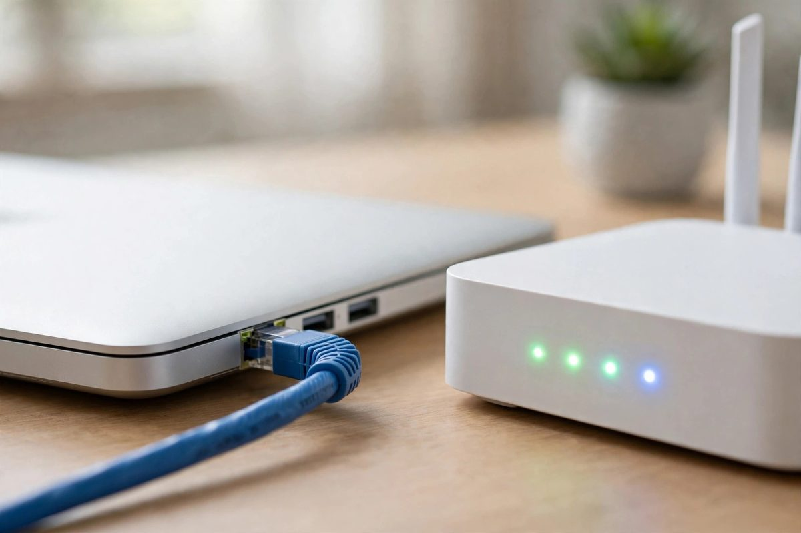

How Fast Is Your Internet, Really?
Run a free speed test right in your browser. SpeedCheck Pro measures your real ping, download and upload speeds — no sign-up, no app to install, and no made-up numbers.
Test servers: Cloudflare
A full test can use a few hundred MB of data. If you are on a mobile data plan, connect to Wi-Fi first.
How to Read Your Speed Test Results
Your result has three numbers, and each one tells you something different about your connection. Download speed is the one most people notice first: it decides how quickly web pages open, files arrive, and videos load. If you want the full picture, start with our guide to download vs upload speed, which explains what each direction actually does in everyday use.
Upload speed matters whenever you send data out — video calls, backing up photos, posting a video, or streaming yourself live. On many home plans the upload figure is much smaller than the download figure, and that is normal, though it can still be the bottleneck on a call. A plan that looks fast on paper can feel slow if its upload side is weak.
Ping is measured in milliseconds and has nothing to do with how much data you can move. It measures delay: how long a tiny message takes to reach a server and come back. Low ping makes everything feel snappy, from opening a page to reacting in a game. Our guide to what ping is and why it matters explains the numbers in plain terms and what counts as good.
Finally, compare your result with what your plan promises. A small gap is expected — Wi-Fi, distance from the router, and other people on the network all take a share. A large gap, every time you test, is worth looking into. If you are not sure what figure to aim for, read what a good internet speed is for your household size and the things you actually do online.
Why Your Result Might Look Disappointing
A slow result does not always mean a slow plan. The most common cause is the connection between your device and your router, not the line coming into your home. A weak Wi-Fi signal, a router tucked behind a television, or a neighbour's network on the same channel can all cut your speed in half. Before calling your provider, work through our checklist in how to fix slow internet — most of the twelve checks take a minute each and cost nothing.
Where you test from matters too. A test run from a phone in the far bedroom will almost always be slower than one run from a laptop plugged into the router. That is why our guide to Wi-Fi vs Ethernet is worth a read: a wired connection removes most of the guesswork and shows you what your line can really deliver. If the wired result is fast and the wireless one is not, the problem is your Wi-Fi, not your provider.
Time of day plays a part as well. Many people notice their connection dragging in the evening, when the whole street is streaming at once. That shared slowdown is real, and it has a few different causes — some you can fix and some you cannot. Our article on why your internet is slow at night walks through each one and what to do about it.
Quick Reference: Speed by Activity
Different things need different amounts of speed. Use this table as a rough guide — your plan only needs to cover the heaviest thing you do at the same time as everyone else in the house.
| Activity | Speed you need | Notes |
|---|---|---|
| Web browsing & email | 3–5 Mbps | Light work; any modern plan covers it. |
| HD streaming | 5–8 Mbps | Per stream; two people watching needs double. |
| 4K streaming | 15–25 Mbps | See our guide to internet speed for streaming in 4K. |
| Video calls | 3–4 Mbps each way | Upload matters as much as download — see internet speed for video calls. |
| Online gaming | 3–6 Mbps, ping under 50 ms | Ping matters more than raw speed — see internet speed for gaming. |
| Live streaming (going live) | 10–25 Mbps upload | Upload is the bottleneck here, not download. |
If you are still unsure how much speed your household needs in total, our guide to how much internet speed you need adds up the usual combinations — one person, a family, a home office — so you can pick a plan without paying for speed you will never use.
Free Tools
Four free tools, all running in your browser. No accounts, no downloads.
Download Time Calculator
Work out how long a file will take to download at your speed.
Calculate download time →Speed Requirements Checker
See whether your speed is enough for streaming, gaming and calls.
Check your speed →Guides & Articles
Plain-English guides that explain internet speed without the jargon — what the numbers mean, what to buy, and how to fix a slow connection.
What Is a Good Internet Speed?
How much speed a household really needs, and how to tell if your plan is too slow — or more than you need.
Read the guide →Download vs Upload Speed: What's the Difference?
Why your plan lists two speeds, which one matters for what, and why uploads are usually slower.
Read the guide →
What Is Ping and Why Does It Matter?
Ping explained in plain English: what the milliseconds mean, what is good, and how to lower them.
Read the guide →
How to Fix Slow Internet: 12 Things to Check
A step-by-step checklist that fixes most slow connections before you ever need to call your provider.
Read the guide →
Wi-Fi vs Ethernet: Which Is Faster?
A fair comparison of wired and wireless connections, and when a cable is worth the effort.
Read the guide →
How to Test Your Internet Speed Accurately
Small mistakes make test results misleading. Here is how to test properly and trust the number you get.
Read the guide →What Is Jitter and Packet Loss?
Two hidden causes of choppy calls and laggy games, explained simply — plus how to spot them.
Read the guide →
Internet Speed for Gaming: What You Really Need
Gaming needs far less speed than ads suggest — but ping and stability matter a great deal.
Read the guide →Internet Speed for Streaming in 4K
How much speed 4K really needs, why it buffers even on fast plans, and how to fix it.
Read the guide →
Internet Speed for Video Calls
What Zoom, Teams and Meet actually need, and why your upload speed decides your call quality.
Read the guide →How Much Internet Speed Do I Need?
Add up your household's real usage and pick a plan that fits — without overpaying for speed you will not use.
Read the guide →
Why Is My Internet Slow at Night?
Evening slowdowns explained: shared networks, peak hours, and the fixes that actually help.
Read the guide →
How to Improve Your Wi-Fi Signal
Practical ways to get stronger Wi-Fi in every room, from router placement to simple settings changes.
Read the guide →Fiber vs Cable vs DSL: Which Is Best?
The three main home internet types compared on speed, reliability and value — and which to choose.
Read the guide →
What Is Mbps and Gbps?
The units behind every speed figure, explained once and for all — including the bits-vs-bytes trap.
Read the guide →
Internet Speed for Working From Home
What a home office really needs for calls, file sharing and cloud apps — plus a backup-plan checklist.
Read the guide →How to Lower Ping in Games
Proven ways to cut lag: wired connections, server choice, background apps and router settings.
Read the guide →
Does a VPN Affect Internet Speed?
Yes, a VPN usually slows you down — here is how much, why, and how to keep the slowdown small.
Read the guide →
Router Placement Guide: Where to Put Your Router
Where to place your router for the best coverage, and the common spots that quietly kill your signal.
Read the guide →5G Home Internet vs Broadband
Can 5G home internet replace a wired connection? An honest comparison of speed, stability and cost.
Read the guide →Frequently Asked Questions
How does the SpeedCheck Pro speed test work?
When you press Start, your browser first sends a few tiny requests to a test server to measure ping. It then downloads test data in parallel streams and times how fast it arrives, and finally uploads a block of test data to measure your upload speed. Every number shown is a real measurement of your connection at that moment — nothing is estimated or filled in.
What is a good internet speed?
For most households, 25 Mbps is enough for browsing, HD streaming and video calls, while 100 Mbps comfortably covers a family streaming and working at the same time. Heavy users — several 4K streams, large downloads, or competitive gaming — will notice the difference at 200 Mbps and above. The right speed depends on how many people share your connection and what they do at the same time.
Why is my result slower than my plan speed?
Your plan speed is the maximum your line can deliver, not a guarantee at your device. Wi-Fi signal, distance from the router, other people using the connection, and the device itself can all reduce the result. Test with a wired connection, close to the router, with other downloads paused, to see what your line can really do — then compare that with the wireless result.
What is ping?
Ping is the time, in milliseconds, for a small message to travel from your device to a server and back. Under 20 ms is excellent, 20–50 ms is good for most things including gaming, and above 100 ms you will start to feel delays in calls and games. Ping depends mostly on distance and the quality of your connection, not on your download speed.
How much data does a speed test use?
A full test can use a few hundred megabytes, because measuring a fast connection accurately requires downloading and uploading a fair amount of test data. On an unlimited home connection that does not matter, but on a capped mobile plan it can eat into your allowance — so use Wi-Fi for speed tests whenever you can.
Is Wi-Fi or Ethernet faster?
Ethernet is almost always faster and more stable, because a cable is not affected by walls, distance or interference from other networks. Wi-Fi is convenient and good enough for most uses, especially on a modern router close by — but for the most accurate test result, and for competitive gaming or large uploads, a wired connection wins.